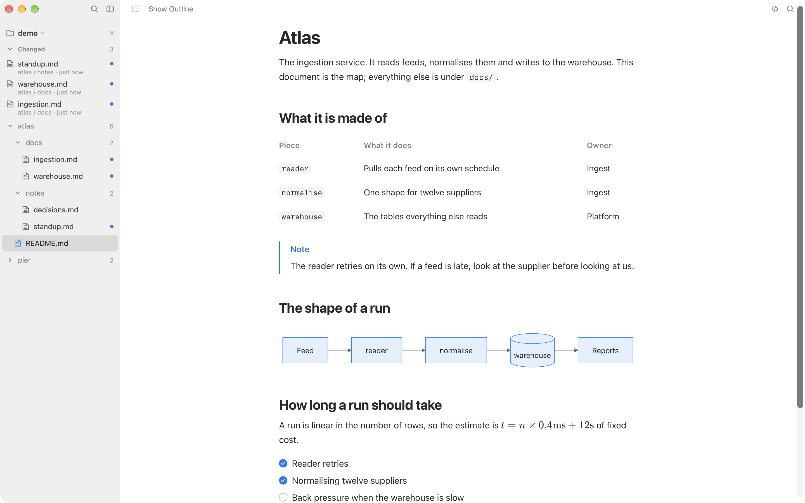
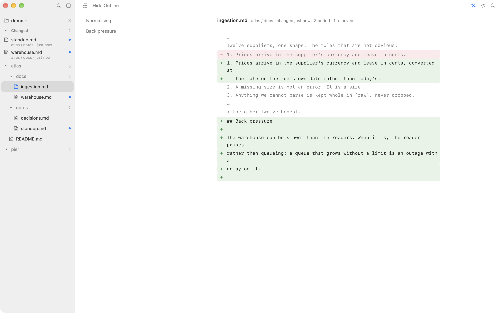
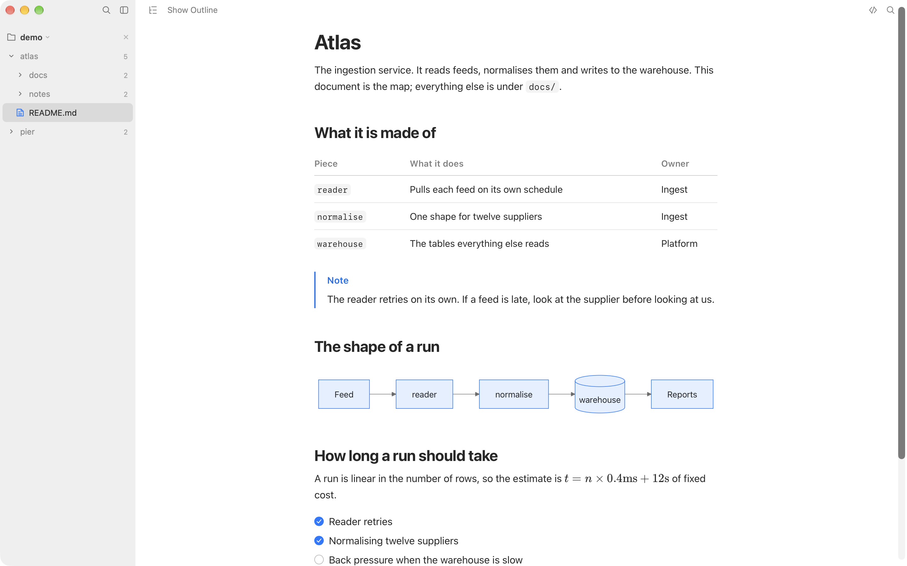
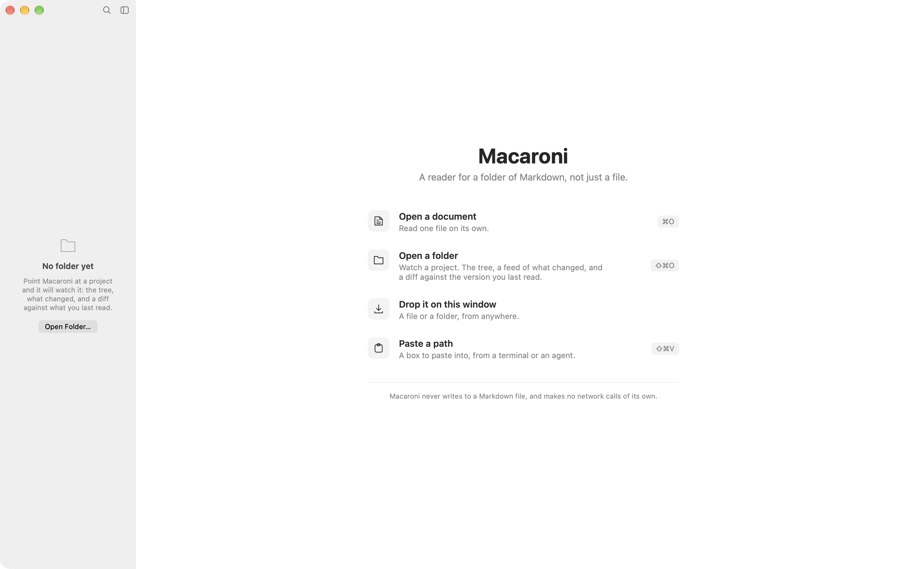

A Markdown reader for a folder, not just a file.
Point Macaroni at a project and it watches the whole tree. It lists what has been written since you last read it, and shows you exactly what moved.

What changed
Find out what an agent wrote while you were away.
Every Markdown viewer renders a file. Macaroni watches the folder. Files written since you last read them are listed at the top of the sidebar, newest first, with a dot beside anything you have not seen. Reading one clears it.
Open one and What Changed, ⇧⌘D, shows you the difference line by line: not against the last commit, against the version you last read. The comparison holds still while you are looking at it, so a document being rewritten underneath you does not move the goalposts.

Reading
It renders what your documents actually contain.
Tables, task lists, footnotes, YAML front matter, GitHub alerts,
<details>, emoji, LaTeX through KaTeX, Mermaid
diagrams, and code with its language named and a button to copy it. A tag
it does not know keeps its text rather than vanishing, and says so.

An outline that follows you
A column of headings beside the page. Pick one to jump to it; scroll and the marker moves with you. It works over the Markdown source and over a diff too.
One search, two questions
⌘F finds in this document, with a counter. ⇧⌘F searches the whole project, names first, then the lines inside each file.
A measure set by counting
The column holds a line near 88 characters at the default size, which was set by rendering real prose and counting rather than by taste. The size and the width are yours to change.
Quick Look
Press space on a Markdown file in Finder and the same page appears, from the same renderer, without opening the app.
It comes back as you left it
The folder, the documents you had open, which one you were reading and where you were in each of them.
The system's own colours
Light and dark, following your accent colour, taken from macOS at runtime rather than guessed at. It answers Reduce Motion, Reduce Transparency and Increase Contrast.
What it will not do.
- It never writes to a Markdown file. Not a formatting pass, not a metadata line, not a saved position inside the document.
- It makes no network calls. There is no networking code in it, and the page it renders your document into is not allowed to make a request either.
- It collects nothing. No account, no sync, no analytics, no crash reporting of its own.
- It is sandboxed, and reads only the files and folders you hand it.
Getting started
Open a folder. That is the whole setup.
There is nothing to configure, no account to make and nothing to sign in to. Drop a folder on the window, or press ⇧⌘O, and the tree, the feed and the diff are all there. If what you have is a path rather than a folder, because a terminal printed it or an agent said where it wrote, ⇧⌘V opens a box already holding it.
Requires macOS 15 or later. Universal, for Apple silicon and Intel.
